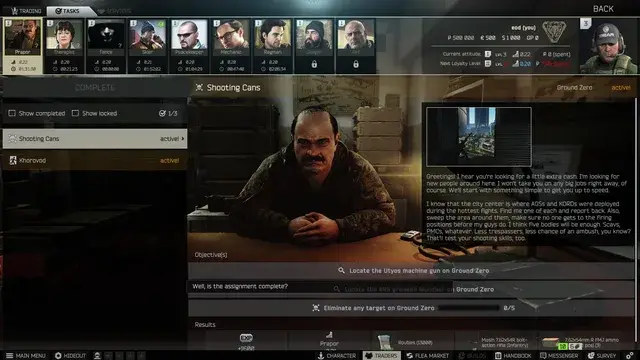
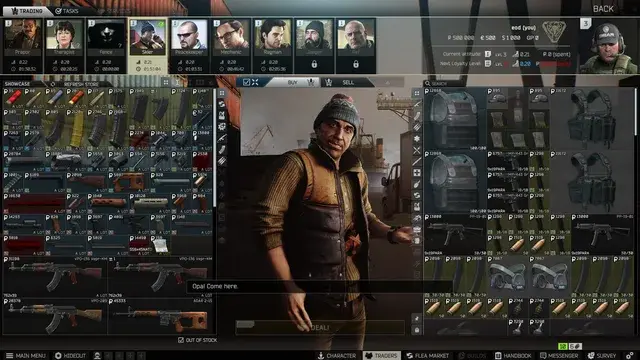

Mod
Featured
Animated Traders
- Downloads
- 28,605
- Favourites
- 62
- Mod lists
- 96
Animated traders integrated into the stash UI. Should load almost instantly. This mod has no gameplay changes, and mainly intended for immersion type beat.
Known issues:
- Peacekeeper and Ref are missing because Big Silly Goose never made models for them.
- Breaks when starting a raid on a headless FIKA instance


Version
1.0.1
SPT ~4.0.0
Fika: compatible
26,885 downloads1.0 GB
- fixed broken weapon build edit screen when hideout is open
- fixed ugly edges on ultrawide monitors
- fixed floating props when interrupted
Note: If you’ve already downloaded the previous version and don’t want to redownload the full archive (~1.0GB), you can download just the updated .dll file from the GitHub Releases page.
VirusTotal: report 1
Version
1.0.0
SPT ~4.0.0
Fika: compatible
1,720 downloads1.0 GB
yo